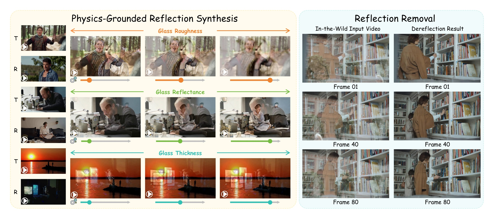
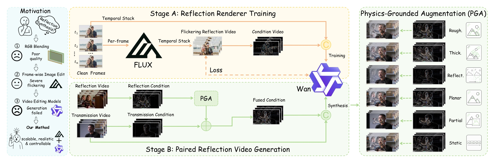
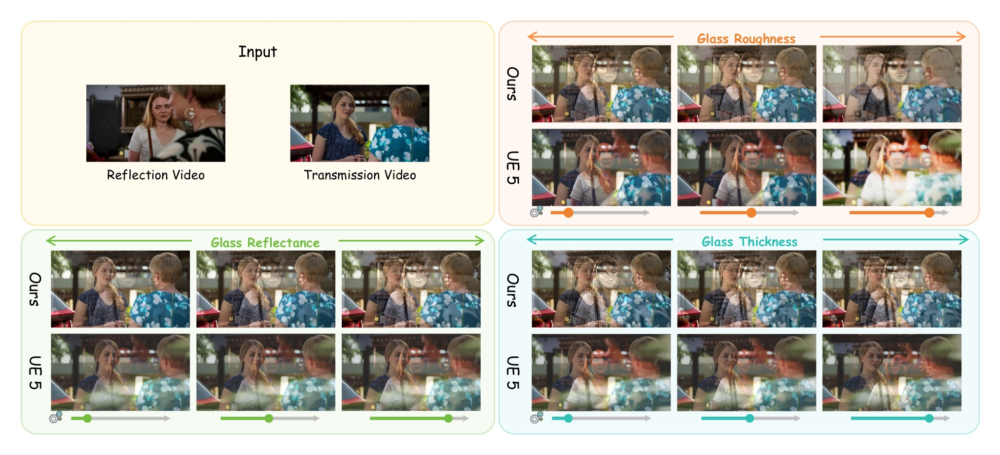
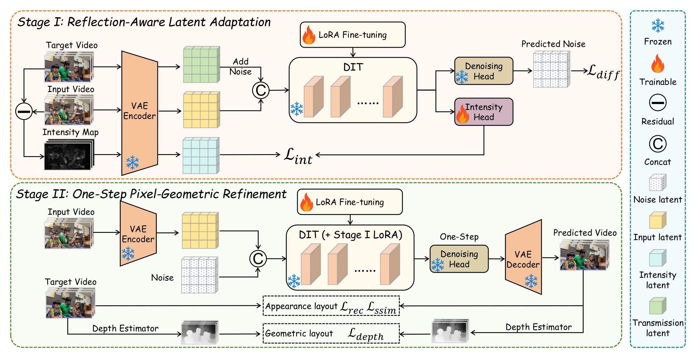
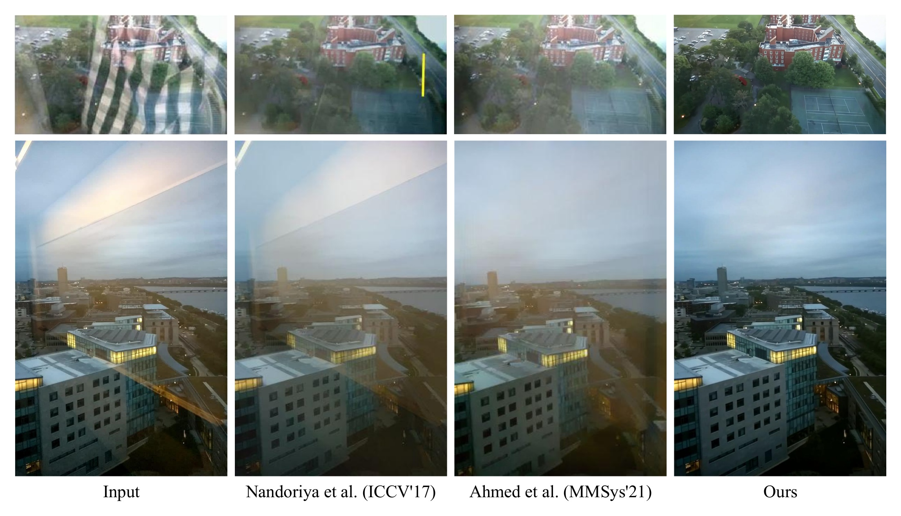
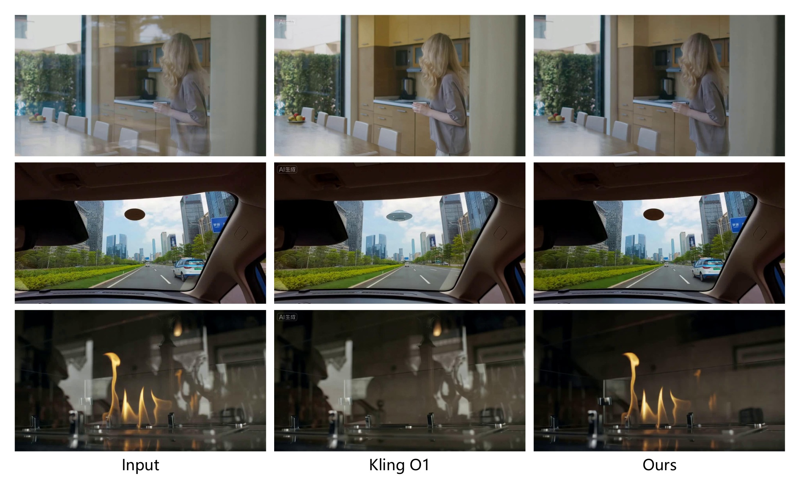
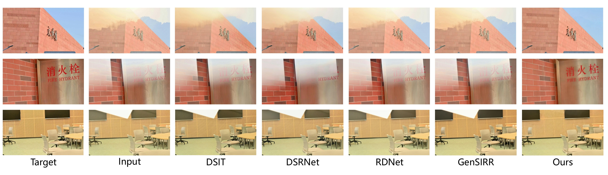
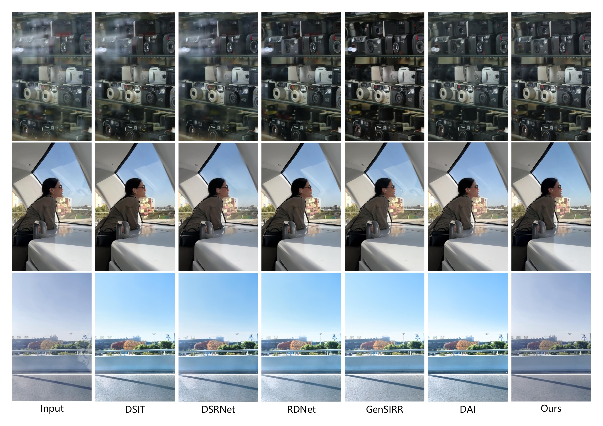
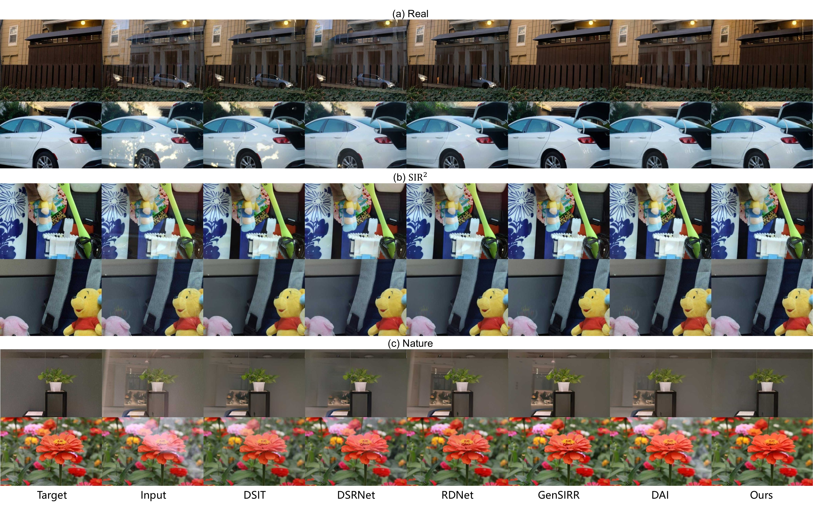
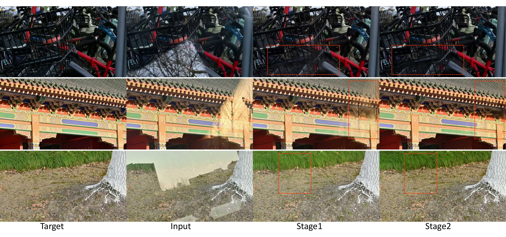

S2R-Ref
60 paired videosReflected and clean sequences with identical virtual camera motion for full-reference PSNR, SSIM, and temporal consistency evaluation.
* Equal contribution
MiLM Plus, Xiaomi Inc.
Videos captured through glass often contain reflections that degrade visual quality and interfere with downstream vision tasks. Although single-image reflection removal has been extensively studied, video reflection removal remains largely underexplored due to the lack of paired video data, temporally coherent removal models, and dedicated evaluation benchmarks. We present S2R, a closed-loop framework that unifies physics-grounded reflection simulation, diffusion-based video dereflection, and benchmark evaluation. S2R-Synthesis generates realistic paired videos through structure-space Physics-Grounded Augmentation and a trained video diffusion renderer. S2R-Removal adapts a pretrained video diffusion prior through reflection-aware latent adaptation and one-step pixel-geometric refinement. S2R-Benchmark supports both full-reference evaluation and real-world human perceptual assessment.

S2R-Synthesis decouples reflection structure from appearance. A structure-guided video renderer learns realistic reflection appearance from FLUX-generated pseudo videos, while Physics-Grounded Augmentation controls reflection geometry and major glass properties in structure space.


| ID | Setting | PSNR ↑ | ΔPSNR | SSIM ↑ | ΔSSIM |
|---|---|---|---|---|---|
| A: Synthetic data source | |||||
| A1 | Base only | 28.05 | +0.00 | 0.9465 | +0.0000 |
| A2 | + Trad. | 31.98 | +3.93 | 0.9619 | +0.0154 |
| A3 | + Ours(P) | 32.35 | +4.30 | 0.9643 | +0.0178 |
| A4 | + Trad. + Ours(P) | 33.26 | +5.21 | 0.9679 | +0.0214 |
| B: PGA variants | |||||
| B1 | P | 32.35 | +0.00 | 0.9643 | +0.0000 |
| B2 | P + St | 32.81 | +0.46 | 0.9670 | +0.0027 |
| B3 | P + St + Pa | 33.62 | +1.27 | 0.9691 | +0.0048 |
| B4 | P + St + Pa + Re | 33.58 | +1.23 | 0.9695 | +0.0052 |
| B5 | P + St + Pa + Re + Th | 33.70 | +1.35 | 0.9697 | +0.0054 |
| B6 | Full PGA | 34.13 | +1.78 | 0.9704 | +0.0061 |
Table 1. Effectiveness of our synthesis pipeline. RDNet is trained on the OpenRR-1k train split and evaluated on its test split. Trad. = traditional synthesis. P/St/Pa/Re/Th/Ro = Planar/Static/Partial/Reflectance/Thickness/Roughness. Δ is relative to the first row of each panel.
S2R-Removal uses two-stage adaptation: Stage I learns reflection-aware latent features with residual-derived intensity supervision, and Stage II performs one-step pixel-geometric refinement with reconstruction, structural, and depth consistency losses.



| ID | Stage-I | Stage-II | PSNR ↑ | SSIM ↑ | |||
|---|---|---|---|---|---|---|---|
| ℒdiff | ℒint | ℒrec | ℒssim | ℒdepth | |||
| 1 | ✓ | — | — | — | — | 27.00 | 0.8348 |
| 2 | ✓ | ✓ | — | — | — | 27.71 | 0.8430 |
| 3 | ✓ | ✓ | ✓ | — | — | 28.21 | 0.8513 |
| 4 | ✓ | ✓ | ✓ | ✓ | — | 28.55 | 0.8566 |
| 5 | ✓ | ✓ | ✓ | ✓ | ✓ | 28.84 | 0.8594 |
Table 2. Ablation study of S2R-Removal on S2R-Ref. We progressively enable the Stage-I latent adaptation losses and the Stage-II pixel-geometric refinement losses.
S2R-Benchmark is the first benchmark dedicated to video reflection removal. It combines paired evaluation with real-world perceptual assessment to measure reconstruction fidelity, temporal consistency, reflection removal quality, and transmission preservation.
Reflected and clean sequences with identical virtual camera motion for full-reference PSNR, SSIM, and temporal consistency evaluation.
In-the-wild reflections spanning diverse glass materials, lighting, reflection strengths, and camera motions for human perceptual evaluation.
| Method | Video Bench | Efficiency | |||||
|---|---|---|---|---|---|---|---|
| S2R-Ref (60) | S2R-Real (50) | 832 × 480 | |||||
| PSNR ↑ | SSIM ↑ | TC ↑ | Removal ↑ | Preserv. ↑ | TC ↑ | ms/frame ↓ | |
| DSRNet (ICCV'23) | 23.78 | 0.857 | 0.9546 | 0.163 | 0.785 | 0.9790 | 329.23 |
| DSIT (NeurIPS'24) | 24.06 | 0.870 | 0.9585 | 0.297 | 0.853 | 0.9781 | 241.05 |
| RDNet (CVPR'25) | 24.71 | 0.870 | 0.9564 | 0.175 | 0.867 | 0.9797 | 145.13 |
| DAI (AAAI'26) | — | — | — | 0.332 | 0.871 | 0.9777 | 217.27 |
| GenSIRR (CVPR'26) | 27.04 | 0.846 | 0.9648 | 0.654 | 0.831 | 0.9747 | 7214.94 |
| Ours | 28.84 | 0.859 | 0.9740 | 0.787 | 0.980 | 0.9827 | 87.09 |
Table 3. Comparison with state-of-the-art dereflection methods on video benchmark.
| Method | Image Bench | |||||||
|---|---|---|---|---|---|---|---|---|
| Real (20) | SIR2 (454) | Nature (20) | Average | |||||
| PSNR ↑ | SSIM ↑ | PSNR ↑ | SSIM ↑ | PSNR ↑ | SSIM ↑ | PSNR ↑ | SSIM ↑ | |
| DSRNet (ICCV'23) | 23.91 | 0.818 | 25.71 | 0.906 | 25.22 | 0.832 | 25.62 | 0.899 |
| DSIT (NeurIPS'24) | 25.22 | 0.836 | 26.43 | 0.911 | 26.77 | 0.847 | 26.40 | 0.905 |
| RDNet (CVPR'25) | 25.71 | 0.850 | 26.69 | 0.908 | 26.31 | 0.846 | 26.63 | 0.903 |
| DAI (AAAI'26) | 25.21 | 0.841 | 27.47 | 0.919 | 26.81 | 0.843 | 27.35 | 0.913 |
| GenSIRR (CVPR'26) | 27.58 | 0.881 | 28.08 | 0.937 | 27.34 | 0.840 | 28.03 | 0.931 |
| Ours | 28.23 | 0.881 | 28.83 | 0.925 | 27.89 | 0.883 | 28.77 | 0.921 |
Table 4. Comparison with state-of-the-art dereflection methods on image benchmarks.




@article{wang2026s2r,
title = {From Synthesis to Removal: Physics-Grounded Reflection Simulation and Diffusion-Based Video Dereflection},
author = {Wang, Zepeng and Hu, Jiagao and Li, Fuhao and Chen, Yuxuan and Wang, Fei and Zhou, Daiguo},
journal = {arXiv preprint arXiv:2608.11562},
year = {2026}
}visitors: — · views: —